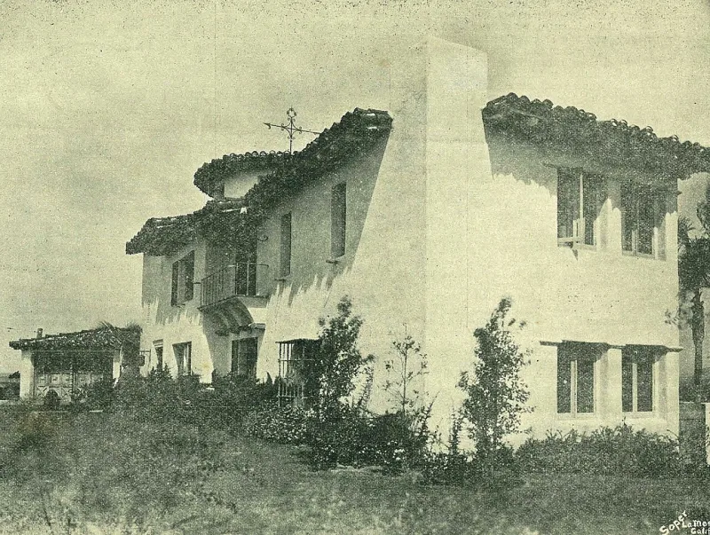
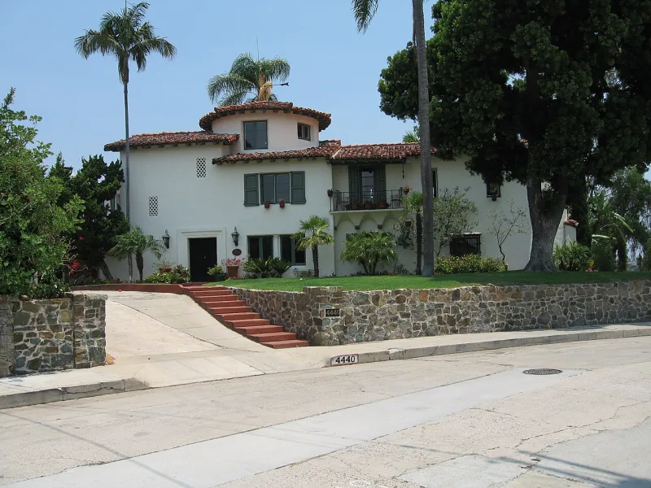
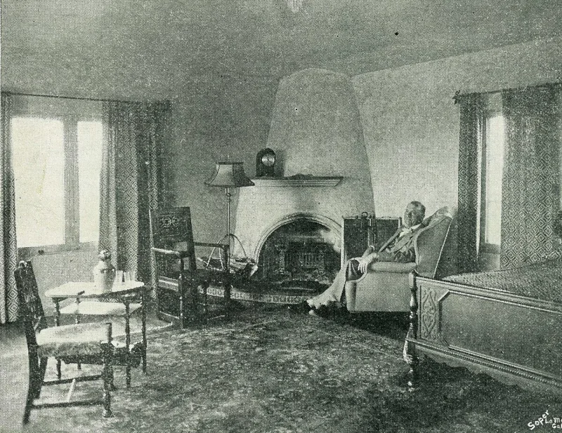

The Watchtower's own publications admit these facts. You can make this point from their library alone.
Rutherford ran a worldwide campaign under one slogan. Millions Now Living Will Never Die (1920, pp.
89-90) said readers "may confidently expect that 1925 will mark the return of Abraham, Isaac, Jacob and the faithful prophets of old." The Watch Tower of Sept 1, 1922 (p. 262) raised it higher.
The date 1925, it said, was "even more distinctly indicated by the Scriptures than 1914."
When 1925 passed, the Society built a monument to it. Beth Sarim was a San Diego mansion, finished in 1930.
Its deed was held in trust for the princes who would rise from the dead: David, Gideon, Barak, Samson and Samuel. Their own book Salvation (1939, p.
311) says so in print. Nobody arrived.
Rutherford wintered there until he died in 1942. The Society sold it quietly in 1948.
Attendance collapsed after 1925. Their own figures show it falling from about 90,000 that year to under 20,000 within three years.
They have owned this failure in print. Proclaimers (1993, p.
78) records the disappointment plainly. A 1980 Watchtower said the hopes rested on wrong premises.
Rutherford himself is reported to have told the Bethel family that he had made an ass of himself over 1925. Defenders say "confidently expect" is hope, not prophecy.
The Awake! of March 22, 1993 says these words were never spoken in Jehovah's name.
Beth Sarim, on this view, was sincere faith in the resurrection.
They admit this themselves. But the defense fails on their own terms.
The 1923 Watch Tower called 1925 clearly marked in Scripture, and the same books call the organization Jehovah's channel. You cannot claim to speak for God and then reclassify a failure as private enthusiasm.
And there is an address: the house still stands at 4440 Braeburn Road.
"They built a house in San Diego for Abraham to live in when he rose from the dead. It is in the book Salvation.
Have you read that part?"



They admit the failure in print. 'Confidently expect' was hope, they say, not prophecy.
The Society has owned this failure in print. Proclaimers (1993, p. 78) records the letdown. A 1980 Watchtower granted that such hopes rested on 'wrong premises.' Defenders note that Rutherford himself is reported to have told the Bethel family he had 'made an ass of himself' over 1925.
The words 'confidently expect' were hope, they argue, not 'thus saith Jehovah.' The Awake! of March 22, 1993 presses the point. These were the mistaken hopes of eager servants. They were never claims made in Jehovah's name. Beth Sarim, on this view, was an honest sign of faith in the resurrection. It was sold once the teaching was fixed.
They admit it themselves. But the house for Abraham still stands at 4440 Braeburn Road.
The organization's own books supply every element. The prediction. The escalation: 'more distinctly indicated than 1914.' The real-estate result in print, in Salvation (1939). And the concession in Proclaimers (p. 78).
The 'never in Jehovah's name' defense fails on their own terms. The same books call the organization Jehovah's channel and mouthpiece. And the 1923 Watch Tower called 1925 'definitely and clearly marked in the Scriptures.' You cannot claim to speak for God, then demote a failed prediction to private hope.
This case bites hard in conversation, because there is an address. The house built for Abraham still stands at 4440 Braeburn Road.